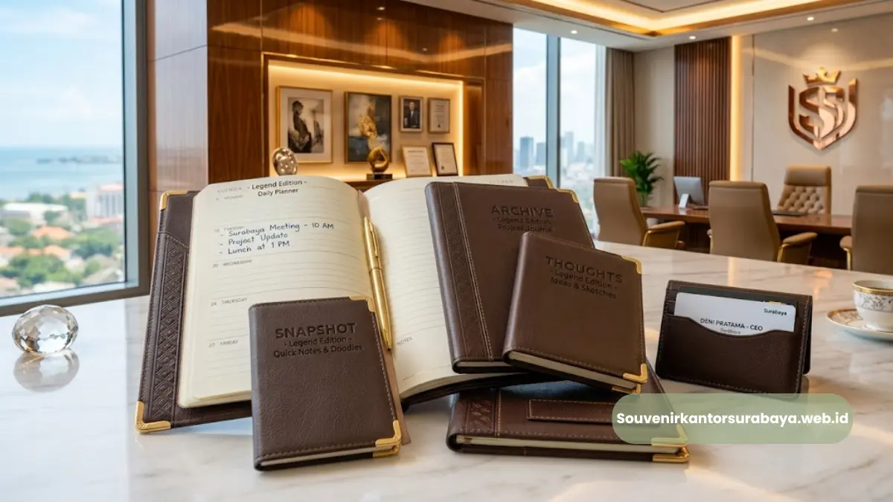
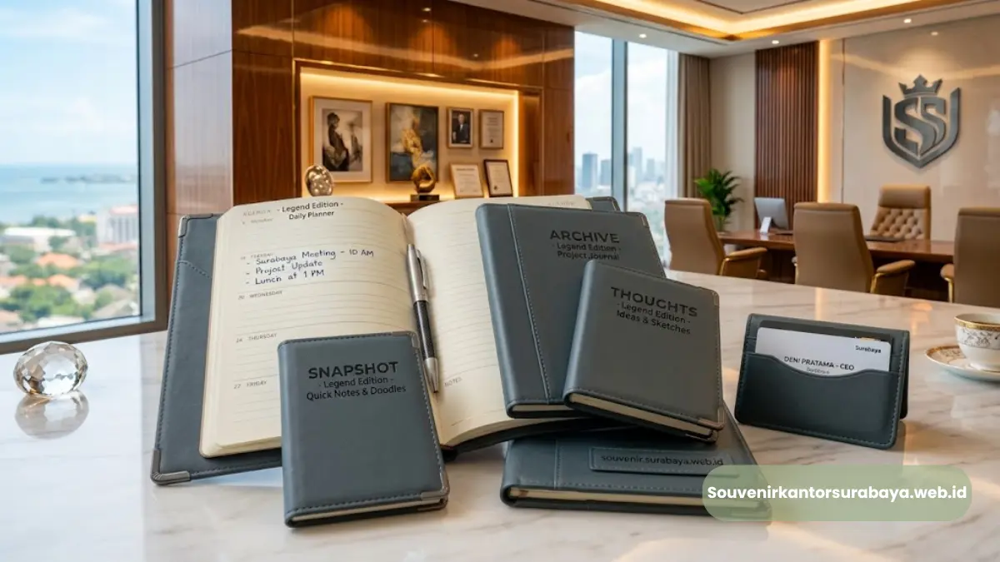
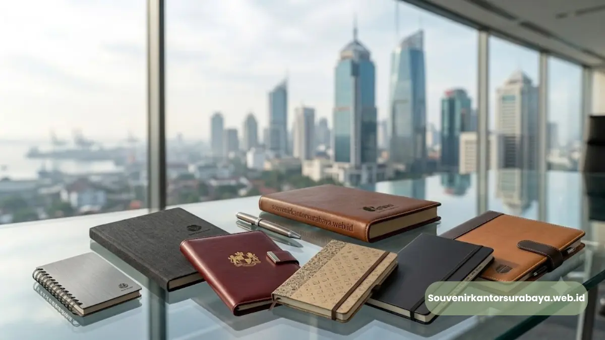
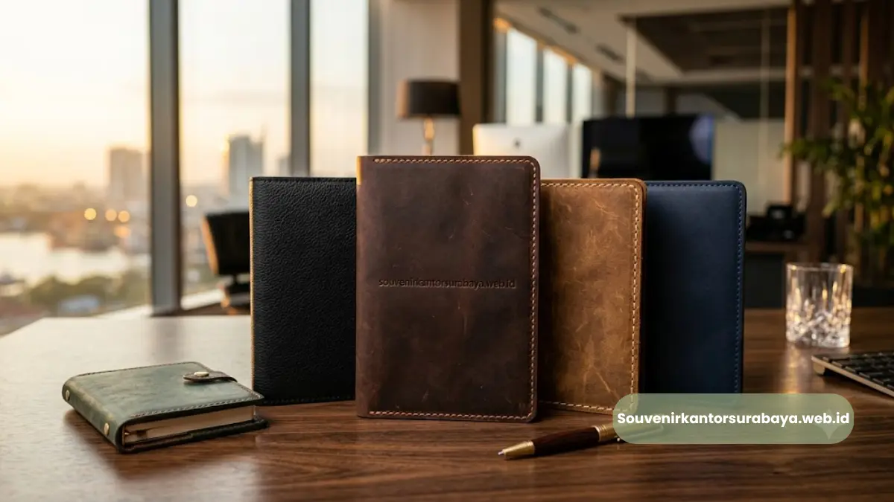
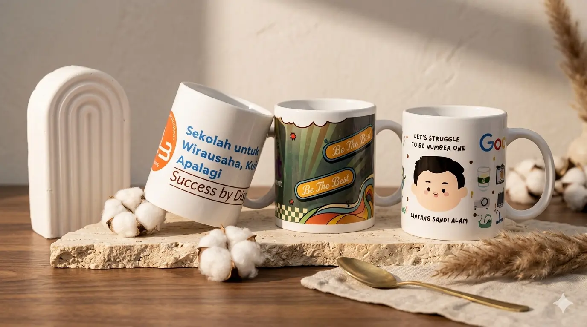

Mengenali perbedaan kulit asli dan sintetis untuk souvenir kelas eksekutif.
Perbedaan utama kulit asli dan sintetis pada souvenir kantor terletak pada tekstur, daya tahan, dan kesan visual yang dihasilkan.
Kulit asli memiliki serat alami yang berubah lebih elegan seiring waktu, sedangkan kulit sintetis cenderung mempertahankan tampilan yang sama namun lebih rentan retak pada pemakaian jangka panjang.
Memahami perbedaan ini penting agar souvenir kantor yang dipilih benar-benar sesuai kebutuhan dan anggaran perusahaan.
- Kulit asli memiliki tekstur alami yang unik pada setiap lembarnya, sedangkan sintetis lebih seragam.
- Kulit asli umumnya lebih tahan gesekan, sementara sintetis lebih rentan mengelupas seiring waktu.
- Sintetis cenderung lebih terjangkau, sedangkan kulit asli menawarkan kesan lebih premium.
- Pemilihan bahan sebaiknya disesuaikan dengan target penerima dan tujuan souvenir.
Bagaimana Cara Membedakan Kulit Asli dan Sintetis Secara Visual?
Kulit asli umumnya memiliki pola serat yang tidak simetris dan sedikit tidak beraturan karena berasal dari bahan alami, sementara kulit sintetis biasanya memiliki pola yang lebih rapi dan berulang karena diproduksi secara pabrikasi.
Baca Juga
Dari segi aroma, kulit asli juga memiliki bau khas yang berbeda dari bahan sintetis yang cenderung beraroma plastik.
Saat disentuh, kulit asli terasa lebih lentur dan hangat, sedangkan sintetis cenderung terasa lebih dingin dan kaku pada permukaannya. Perbedaan sensorik ini sering menjadi acuan awal sebelum memutuskan bahan yang akan dipilih untuk souvenir kantor.
Mana yang Lebih Tahan Lama untuk Penggunaan Harian?
Untuk penggunaan harian dalam jangka panjang, kulit asli umumnya lebih unggul karena seratnya yang alami membuatnya lebih fleksibel terhadap tekanan dan lipatan berulang.

Pemilihan cover agenda sangat memengaruhi daya tahan souvenir dalam jangka panjang.
Sebaliknya, kulit sintetis berpotensi mengelupas atau retak pada bagian lipatan setelah dipakai dalam waktu tertentu, terutama jika kualitas lapisannya kurang baik.
Meski demikian, daya tahan sintetis juga dapat bervariasi tergantung kualitas produksi, sehingga perbandingan ini sebaiknya tetap mempertimbangkan tingkat kualitas masing-masing produk, bukan sekadar jenis bahannya secara umum.
Mana yang Lebih Cocok untuk Souvenir Kelas Eksekutif?
Untuk souvenir kelas eksekutif, buku agenda kulit asli lebih sering dipilih karena kesan mewah dan eksklusif yang melekat pada bahan tersebut, sesuai dengan citra yang ingin ditampilkan kepada klien atau mitra bisnis kelas atas.
Kulit sintetis lebih cocok digunakan untuk souvenir dengan skala distribusi besar dan anggaran yang lebih terbatas, seperti merchandise acara internal berskala luas.
Pemilihan bahan pada akhirnya kembali pada tujuan souvenir tersebut dibuat, apakah untuk membangun kesan eksklusif kepada segelintir mitra strategis, atau untuk dibagikan secara masif dalam sebuah acara.
Kesimpulan
Baik kulit asli maupun sintetis memiliki karakteristik masing-masing yang perlu disesuaikan dengan tujuan dan anggaran souvenir kantor. Untuk kesan eksekutif yang lebih premium dan tahan lama, kulit asli tetap menjadi pilihan yang lebih direkomendasikan.
Jika perusahaan Anda membutuhkan konsultasi mengenai bahan souvenir yang paling sesuai, souvenir kantor surabaya siap membantu menentukan pilihan terbaik sesuai kebutuhan dan anggaran perusahaan Anda.

Hawa Nadira
Tim penulis CorporateGifts ID berfokus pada strategi souvenir kantor, merchandise korporat, dan inovasi brand untuk klien B2B.
Keahlian: Branding perusahaan, produksi souvenir, paket event, desain materi promosi.
Artikel Terkait

Buku Agenda Kulit Asli Eksekutif Surabaya untuk Souvenir Kantor Premium
Buku agenda kulit asli eksekutif Surabaya adalah souvenir kantor premium berbahan kulit asli yang dirancang untuk memperkuat citra profesional perusahaan.
Baca Selengkapnya
Manfaat Buku Agenda Kulit untuk Branding Perusahaan
Buku agenda kulit memberi manfaat branding karena tampil sebagai media promosi berjalan yang digunakan berulang kali.
Baca Selengkapnya
Ide Souvenir Kantor
Pilihan souvenir kantor dengan sentuhan branding yang membuat acara perusahaan semakin berkesan.
Baca Selengkapnya